How to use the family tree
This website is the family tree of the Jaggis of Chakwal, starting from Bakhshi Bhanna Mal Jaggi. Anyone with the link can look at it. Family members who were invited can also add and correct information, and earn blessings for it. Once you have claimed your own box, changes to your own family appear straight away. Other changes are checked first, by the admin or by the branch admin for that part of the tree, and appear once approved.
1. Signing in
You only need to sign in to add or change something. There is no password.
- Open the site and tap Sign in at the top right.
- Type the email address you were invited with, and tap Email me a sign-in link.
- Open the email from Sunil Jaggi. It arrives within a minute. If not, look in your Spam folder.
- Easiest: go back to the site and type the 7-digit code from the email into the box, then tap Sign in with code.
Or tap the link in the email.
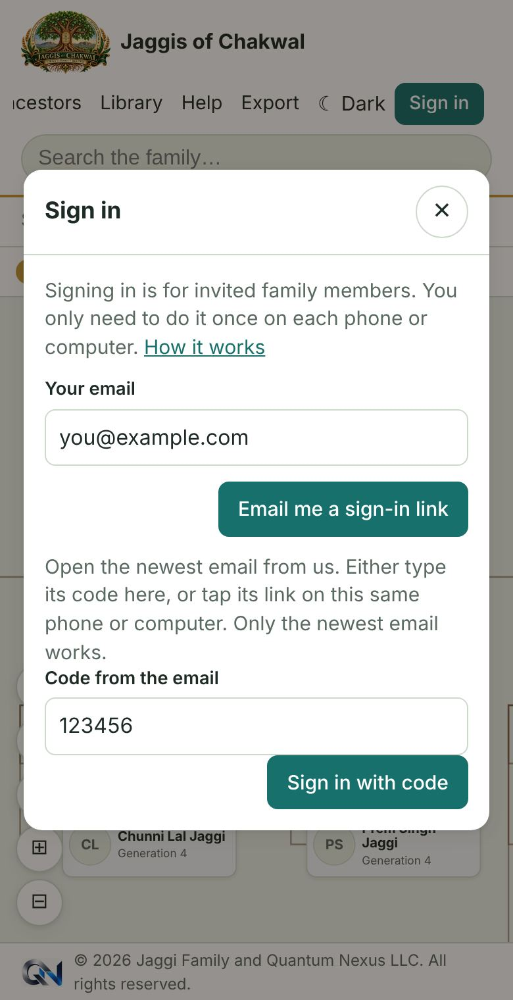
2. Claim your box: "This is me" (important)
Right after you first sign in, the site usually does this for you. If your invitation names your box, the tree moves to it and a box opens saying Welcome dear member of Jaggi Family! and asking Is this you?. Tap Yes, I am … and you are done. If it isn't you, type your name under Not you? Search for your name, pick yourself and tap Yes, this is me.
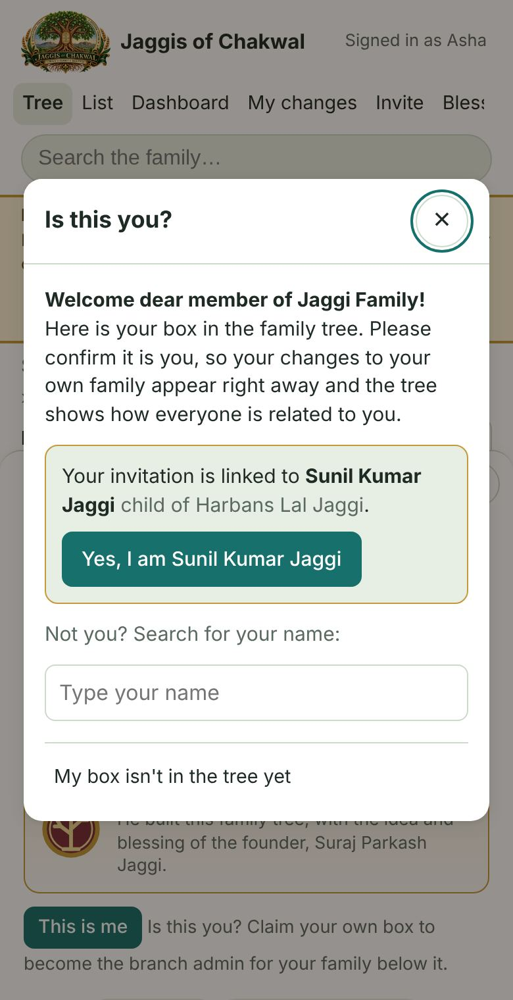
If you closed that box, you can claim later:
- Tap Go to my box on the yellow reminder, or type your name in Search the family and pick yourself.
- On your card, tap This is me and confirm.
- Not in the tree yet? Open your father's or mother's card, tap Add: Child, add yourself, and once you appear, claim that box.
Claim before you change anything. Until you have claimed a box, tapping any add, edit, photo or link button first opens First, claim your own box. Claim there and your change carries on. If you are not in the tree yet, tap My box isn't in the tree yet, then Continue: you can then add yourself under your father or mother, and you won't be asked again during that visit.
Once you are signed in, open your own box in the tree and tap This is me. You become the branch admin for your own family below that box. If your invitation was linked to that box, this happens straight away. Otherwise the person who invited you, or the admin, confirms it first. Each account can claim only one box, and each box belongs to only one person.
As a branch admin:
- You, your husband or wife, your children, grandchildren and their husbands and wives: you can edit them, add children and spouses, and change photos. Your changes appear in the tree straight away, with no waiting.
- Your parents and grandparents who have passed away: you can correct their details and photo. If a brother or cousin has also claimed their own box, changes to those shared ancestors go to the admin instead.
- Suggestions from others: when another family member suggests a change to your part of the tree, it appears under Review for you to approve or decline.
- Still checked by the admin: adding parents, brothers and sisters or cousins, and linking people already in the tree.
- Only the admin can remove: nobody else can remove a person from the tree or undo a parent or marriage link, not even as a suggestion. If something needs removing, ask the admin.
- If you married into the family, you can claim your own box, edit your own details and photo, and look after your children's families. Nobody except the admin can add the parents, brothers or sisters of someone who married in, not even as a suggestion, so the tree stays about this family.
Every change records who made it and when, under Sources on the person's card. The admin can undo any change, and sees every branch admin and their box on the Members page, where they can also remove someone as branch admin.
3. Staying signed in
Once you're signed in, the site remembers you on that phone or computer, in that browser. Next time, just open the site; you don't need to sign in again.
You will be asked to sign in again only if:
- you use a different phone, computer or browser,
- you tapped Sign out,
- you use a private or incognito window, or you cleared your browser's history.
- iPhone: in Safari, tap the Share button, then Add to Home Screen.
- Android: in Chrome, tap the ⋮ menu, then Add to Home screen.
4. Looking around the tree
- Move around: scroll up and down with two fingers on a trackpad, the mouse wheel, or by dragging. Pinch, or use the + and − buttons, to zoom. The bar across the top of the tree shows which generation and family you are looking at; tap a name in it to go there.
- Open a family: the small round button under a person shows how many children they have. Tap it to show or hide them.
- See a person's details: tap their card. Their parents, spouse, children and siblings are listed, and you can tap any of them.
- Quick look: rest the mouse on a box, or press and hold it on a phone, to see a balloon with a larger photo, years and age, birthplace, work, spouse, children, branch, and how the person is related to you. A normal tap still opens their full card.
- Edit straight from the tree: when you are signed in, each box has a small pencil in its top corner. Tap it to open that person's edit form. It works the same as Suggest an edit on their card, and changes still wait for the admin's approval.
- Husbands and wives: someone who married into the family has their own smaller box with a dashed edge, just below their partner and joined to them by two gold rings. Their children hang below the couple. Children who have no children showing yet are listed in a column, so the tree stays narrow; tap the number under a box to open that family. Tap the box to see or add their details and photo.
- Find someone: type a name in Search the family. Different spellings, like Parkash and Prakash, still find them.
- Start the tree from one person: open their details and tap Show tree from here. The line at the top shows their ancestors; tap any name there to go back up, or Whole tree.
- List view: tap List at the top for a simple indented list, which is easier to read on a small phone.
- Light or dark: tap ☾ Dark or ☀ Light in the menu to switch colours. Your choice is remembered on that phone or computer; until you choose, the site follows your device's own setting.
- The family logo: rest the mouse on the logo at the top left, or tap it on a phone, to see it large.
- You, at the top: once you are signed in and have claimed your box, your photo, name, blessings and badges sit in the header (on a phone, beside the logo). Tap them to open the Blessings page; tap ? for how blessings work.
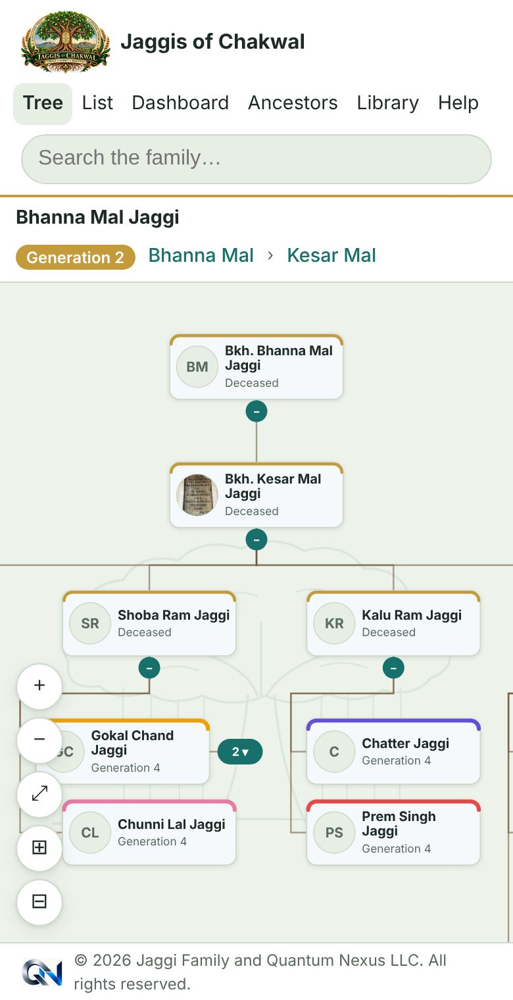
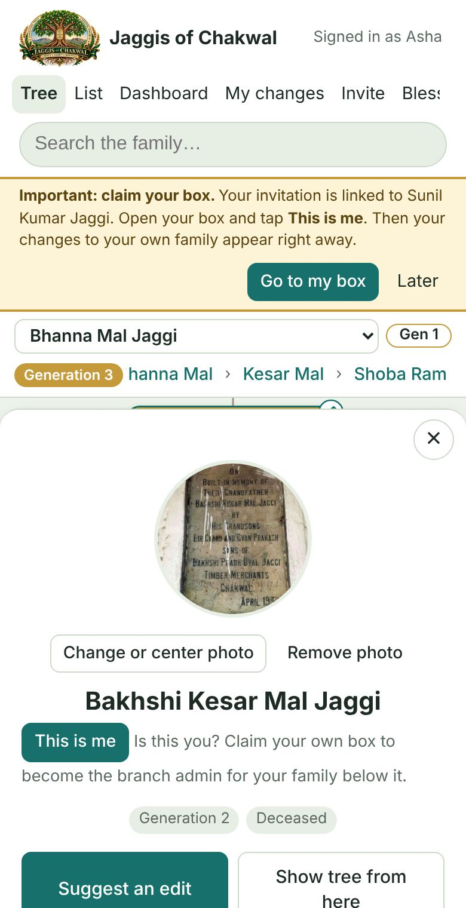
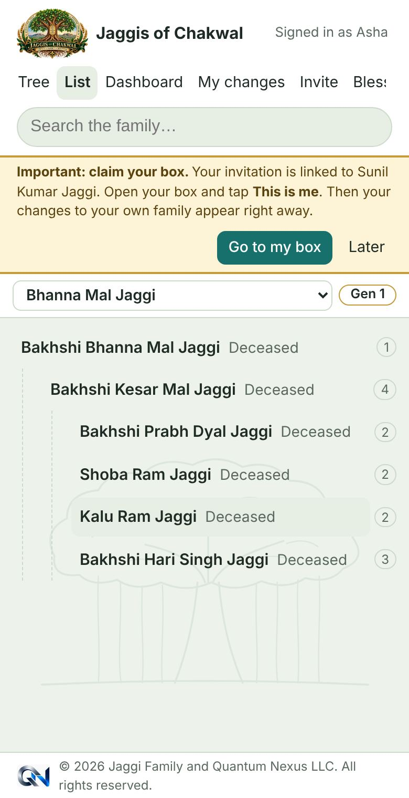
A card marked ?, and a dashed line, means the parent isn't confirmed. If you know the answer, please tell us.
5. Adding or correcting information
Sign in first, then tap the person's card.
- Suggest an edit: correct a name, add the year of birth or death, places, profession, or a memory in Notes / Story.
- Add: Child / Spouse / Parent: add someone who is missing.
- Link to someone already in the tree: connect two people who are both already there.
Gender and Living? must be filled in when you add or edit someone: they show Choose... until you pick one. If you really don't know whether someone is living, ask a relative or add an open question.
The Save (or Send for approval) button stays at the bottom of the form while you scroll. If you close a form with ✕ after changing something, the site asks Save your changes? with Keep editing, Discard changes or Save, so nothing is lost by accident. If something can't be saved, the message appears inside the form, so you can fix it and try again.
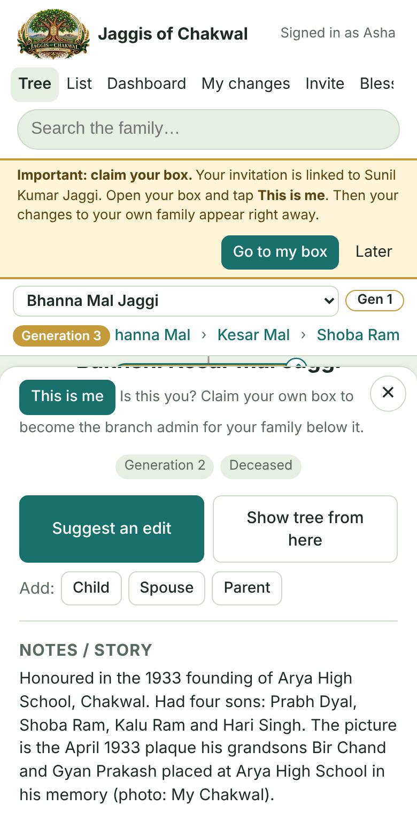
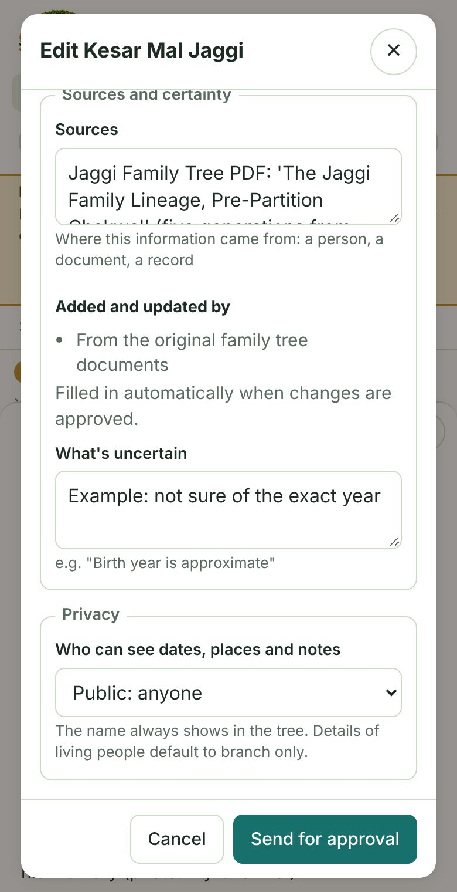
For births and deaths, only the year is recorded, never the full date. Years can be approximate, for example c. 1925 or 1930s. Use Sources to say where the information came from (for example "Dadi's memory" or "school records"), and What's uncertain for anything you're not sure about.
Your own family: once you have claimed your box, changes to yourself, your husband or wife and your descendants are saved straight away (the button says Save). Everything else is a suggestion.
After you tap Send for approval, your change waits for the admin. It won't show in the tree until it is approved. While it waits, you can see it on that person's card in a yellow Waiting for admin approval box (only you see this), and under My changes, where you can also withdraw it. Don't worry about making a mistake; nothing changes until it's approved.
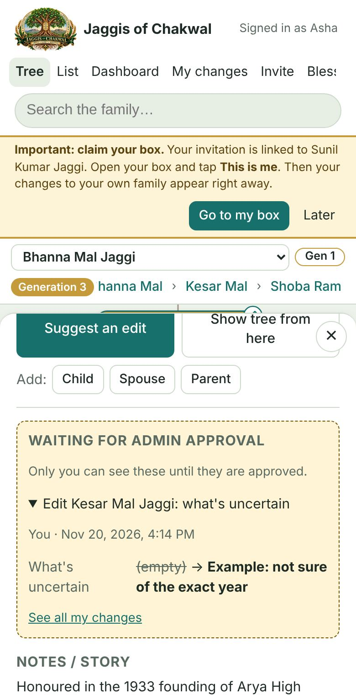
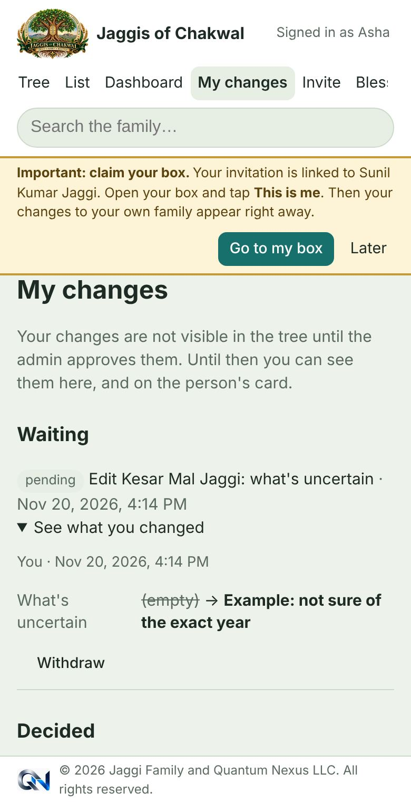
6. Adding a photo
- Sign in and tap the person's card.
- Tap Add photo and choose a picture.
- Center it: drag the photo with your finger or mouse, and use the slider to zoom, so the face sits inside the circle.
- Choose who can see it, then tap Send for approval.
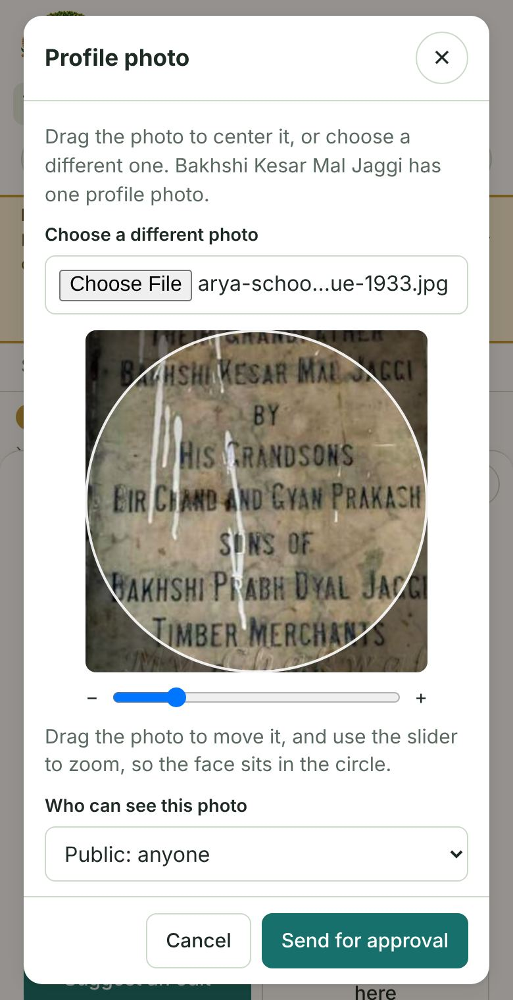
To move a photo that's already there, tap Change or center photo, drag it into place and send it. To take a photo off, tap Remove photo.
Each person has one profile photo. The site makes the picture smaller automatically, so any photo from your phone is fine.
7. Inviting a relative
Anyone who is signed in can invite another family member.
- Tap Invite at the top.
- Type their email and name, and pick who they are in the tree. If they aren't in the tree yet, add them first from a relative's card.
- Tap Invite. The site emails them an invitation with a button that signs them in.
- If you like, also tap WhatsApp or Copy message to send them a ready-made message from your own phone.
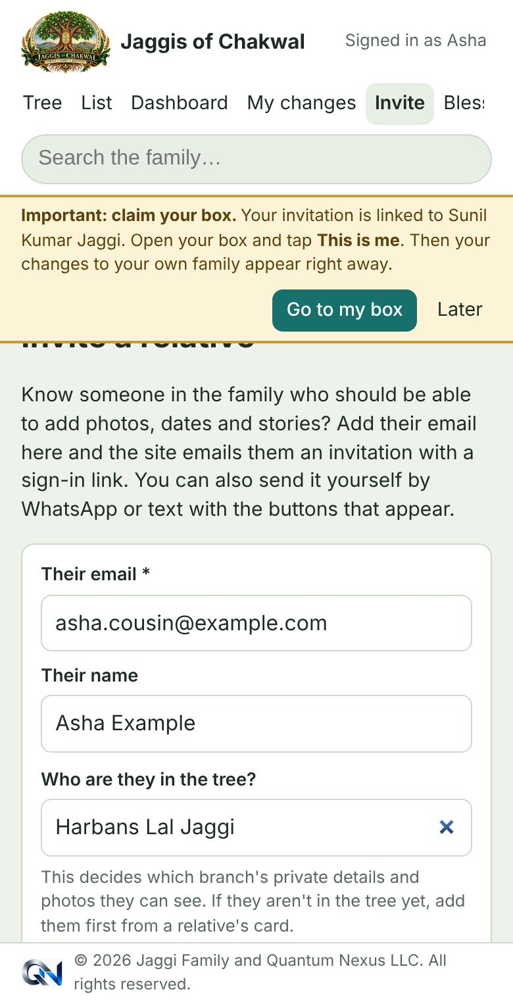
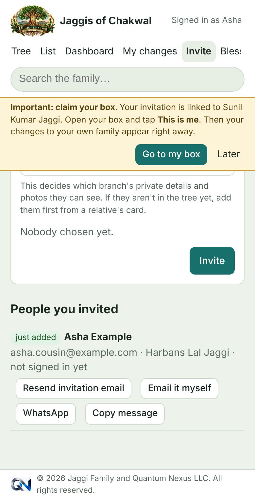
The people you invited are listed on the same page, with Resend invitation email in case it got lost.
8. Blessings and badges
Every time you add to the family tree, you earn blessings ✦. They show how much each of us has given to keeping our family story alive. Blessings count once a change is approved (changes to your own family count straight away). Tap Blessings in the menu, or your blessings at the top, to see the leaderboard.
| You earn | Blessings |
|---|---|
| Claim your own box ("This is me") | 5 |
| Add a person | 5 |
| A story about someone (in Notes / Story) | 5 |
| Add a photo | 5 |
| Birth or death year, birth or death place, profession, source | 2 each |
| Other details, like names or gender | 1 each |
| Connect two people already in the tree | 3 |
| A link for the family Library (once approved) | 3 |
| Invite a relative who then signs in | 10 |
Our elders count most. Details about the earliest generations are the rarest, so they are multiplied: 5× for Generation 1 (Bakhshi Bhanna Mal Jaggi), 4× for Generation 2, 3× for Generation 3 and 2× for Generation 4. After you save, a message tells you how many blessings you earned or will earn.
Badges. Reach a goal and you keep the badge for good:
- Root Keeper: add 10 people to the tree.
- Storyteller: add 5 stories.
- Photo Finder: add 10 photos.
- Connector: 3 relatives you invited sign in.
- Family Historian: the most blessings this month. This one moves to whoever leads each month, and the leader gets a short congratulations message.
Two special badges are given by hand: Founder of the Jaggi Family Tree for Suraj Parkash Jaggi, who had the idea and made the first two family trees this one grew from, and Creator of the Jaggi Family Tree for Sunil Kumar Jaggi, who built the site. They show on their boxes in the tree too.
The Blessings page shows the leaderboard for this month or all time, your badges and how close you are to each, the totals for each branch of the family, and a list of your own blessings. The first time you sign in, a short Welcome to Family Blessings message explains all this; to see it again, tap How it works on the Blessings page, or the ? next to your name at the top.
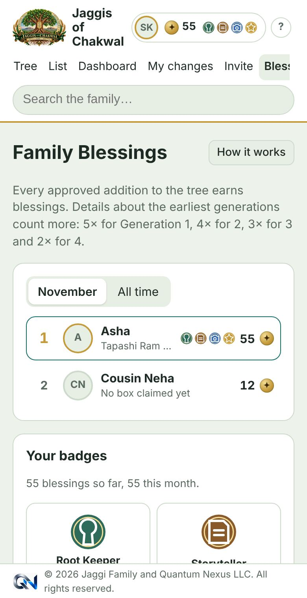
9. The family dashboard
Tap Dashboard at the top to see the whole tree at a glance:
- Numbers: how many people, generations, marriages, branches, photos and sources.
- Needs attention: who is missing a birth year, a birthplace, a parent, a photo or a source. Tap a row to see the names, then tap a name to open their card and fill in what you know.
- People per branch: each branch has its own colour, which is also the coloured top edge of that branch's cards in the tree.
- Born by period, birthplaces, earliest ancestors and common first names.
- Open questions: things the family is still trying to find out. Anyone signed in can add one.
A few rows in Needs attention are worth knowing about:
- Not known if living and Gender not recorded: tapping a name here opens that person's edit form straight away, so you can pick the answer and save.
- Possible duplicates (similar names): pairs of people whose names are spelled alike, with their parents, so you can tell whether they are really the same person. Only people of the same gender are paired, and placeholder names like Unknown are skipped. If two people really are different, an admin taps Not a duplicate and the pair is no longer listed. If they are the same person, tell the admin.
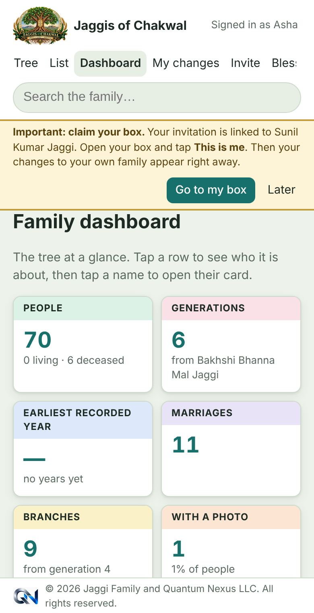
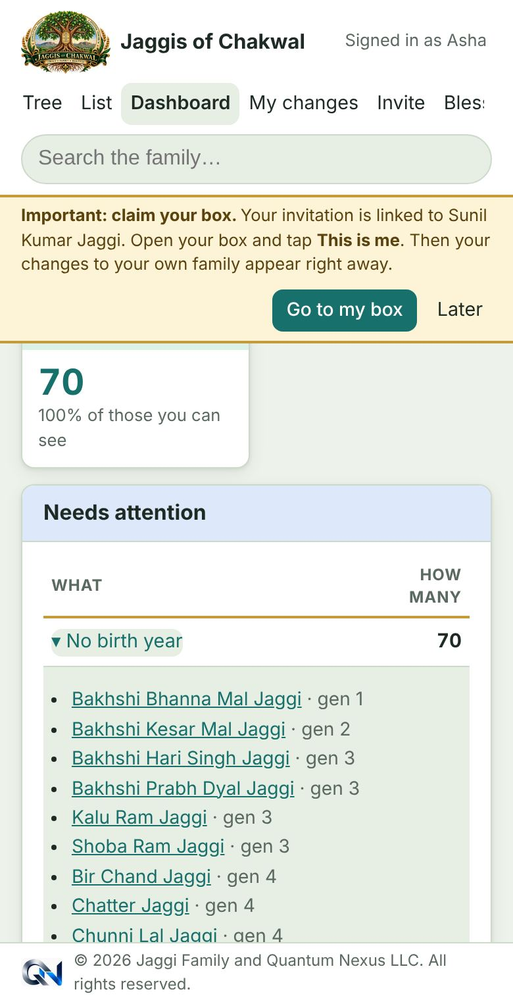
Printing the tree or saving it as a PDF
Tap Export at the top, then Make the PDF. You get a family book: a cover page with the Jaggis of Chakwal logo, the whole tree as an indented chart, and a page for everyone with their years, places and photo. Every page has the small family logo at the top and the copyright line at the bottom. When the print window opens, choose Save as PDF as the printer. On an iPhone, tap Share, then Print, pinch outwards on the preview, then Share and Save to Files.
The .ged file on the same page is for genealogy programs and sites such as Ancestry, FamilySearch or MyHeritage. It is not meant to be opened on its own. Both include only what you are allowed to see.
10. The family Library: videos and articles
Tap Library at the top. It keeps the videos, articles and other writing about the Jaggis of Chakwal in one place: Chakwal's history, Partition, Arya High School, family members and more. Anyone can look. YouTube videos play right on the page; tap Open on anything else to read it on its own site. Use the search box or the topic buttons to find something.
Adding a link (family members)
- Find the video or article, and copy its link. On YouTube, tap Share, then Copy link. On a website, copy the address from the top of your browser.
- Sign in, tap Library, then + Suggest a link.
- Paste the link. For YouTube videos the title and picture fill in by themselves. Otherwise type a short title.
- Check the topic. The form suggests one from the title and your note; change it if another fits better. If none fits, pick + New topic… at the bottom of the list and type a name. It becomes a new button on the Library page. Add a few words about why it matters to the family, and, if it is about someone in the tree, type their name under People in the tree it is about.
- Tap Send for approval.
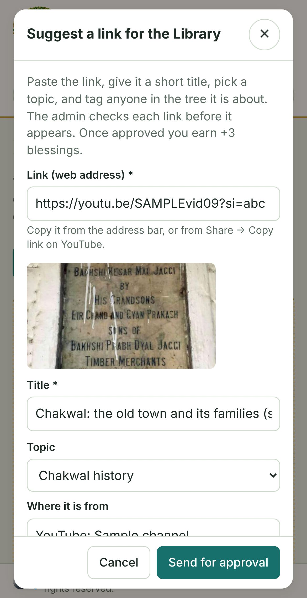
Your link appears in the Library once the admin approves it, and you earn 3 blessings. Until then you see it at the top of the Library page, marked Waiting for approval, where you can also withdraw it. The same link can't be added twice.
You can also add a link from a person's card: open their card, scroll to In the Library, and tap + Add a link about…. The person is tagged for you.
Links on a person's card
A link tagged with someone also shows on their card in the tree, under In the Library, with See in the Library for all the links about them.
For the admin
- Adding: the same + Add a link button. Your links go into the Library straight away.
- Approving: suggested links wait under Review, below the changes to the tree, and the number on Review includes them. Tap Approve, Decline (with an optional note to the member), or Edit first to tidy the title or topic before approving.
- Changing or removing: every card in the Library has Edit and Remove for the admin.
- Family only: under More options, a link can be made visible to signed-in family members only. Everything else in the Library is public.
11. For the admin
The admin sees two more items in the menu, Review and Members. Branch admins (anyone who has claimed a box) also see Review for suggestions about their part of the tree.
Review
- Every change waiting for approval, with exactly what would change. Tap Approve or Decline, with an optional note to the member. The number on Review is how many are waiting, including Library links.
- Recent decisions lists what was approved lately, with Undo: an added person is removed again, edited details go back to how they were, and a "This is me" claim is taken back.
Members
- Branch admins: who has claimed which box, how many people are in their branch, and who invited them, with Remove as branch admin.
- Missing details: for every branch admin, a card showing how much of their branch (their own box, everyone below it and their spouses) is complete, with a bar and Show what's missing. A box counts as missing something when it has no photo, no birth year, no year of passing (only for someone who has passed away), no birthplace, or gender or "Living?" left blank. Each name opens that person's edit form. Tick who to remind (Everyone with gaps ticks all of them) and tap Write the reminder emails: each person gets a separate, friendly email listing only the gaps in their own branch. Change any wording, tap Preview to see exactly what they will receive, untick anyone you want to skip, then tap Send these emails. Nothing is sent before that, and each email shows Sent once it has gone. Replies come to the admin's own email.
- Invite someone: add an email, a name, who they are in the tree and their role (Member or Admin). The site emails the invitation; WhatsApp and Copy are there too.
- Send a reminder email: pick who gets it (Everyone, Not signed in yet, No box claimed, or tick people one by one), write a subject and message, tap Preview the email, then Send. Each email starts "Dear <first name>," and ends with a button to open the tree. Replies come to the admin's own email.
- Invites: everyone invited, whether they have signed in, and who invited them. Remove stops that person signing in (they are signed out within the hour); what they already added stays in the tree. Removed people are listed under Removed with Restore, which gives back their invite, login and, if nobody else claimed it meanwhile, their box.
- Members who have signed in, with their role and box, which the admin can change.
Elsewhere
- Blessings page: Give or take back blessings adds a bonus (for example for answering an open question) or takes some back, with a reason the member sees. Admins appear on the leaderboard but can't hold Family Historian.
- Dashboard: Not a duplicate under Possible duplicates; Visits by family members (signed-in visits, only the admin sees it) and the anonymous count of public visitors.
- Removing: only the admin can remove a person from the tree or undo a parent or marriage link.
12. Who can see what
- Names and who is related to whom can be seen by anyone with the link.
- Birth years, places, notes and stories, and photos can be marked Public (anyone) or Branch only (only signed-in family in that branch). Details of living people are Branch only unless you choose otherwise.
- Your branch is set when you are invited, by who you are in the tree. It covers your own line and your spouse's line.
- Visits: when you are signed in, the site notes which pages and people you open, so the admin can see how the tree is being used. Only the admin sees this. Visitors who are not signed in are only counted anonymously (no cookies, no names).
- Search engines such as Google can find a simple page for each family member who has passed away, with their Public details only (see the list of ancestors). Living people, and anyone not yet marked as passed away, never get a page and are not named there.
13. If something isn't working
- "This email hasn't been invited yet": ask the admin, or the relative who invited you, to invite that exact email address.
- No email arrived: check Spam, wait a minute, and make sure the address is spelled correctly.
- "Link has expired or was already used": ask for a new email and use the code from the newest one.
- A box pops up asking you to claim your box: see Claim your box. If you are not in the tree yet, tap My box isn't in the tree yet.
- "Please choose Gender and Living?": both are required; pick an answer in each and save again.
- Signed in but can't see someone's dates: those details are marked Branch only for another branch of the family.
For anything else, contact the admin (Sunil Jaggi).
Back to the family tree